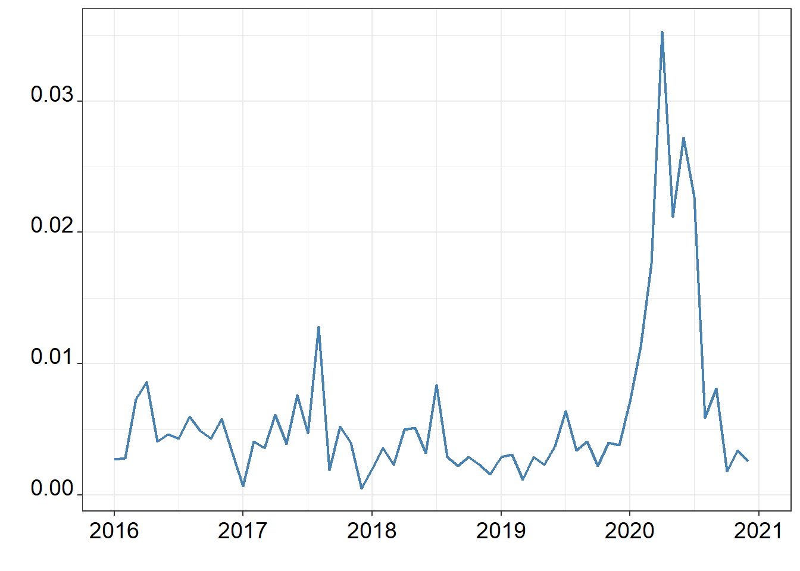

4 An exercise in reproducibility
Project selected: Bats and COVID-19
the code in this project downloads gtrends data for the query “bats” and the word bat translated in different languages in there associated geolocations, for the time period from 2016 to 2020. using this it plots figures that outline the correlation between searches about covid-19 and searches about bats.
The readability of the code of this project is well done. Chunks of code have comments explaining the general function of the chunk. This makes it easy to understand the general make up of the script. i would only have to try to understand the packages that im not familiar with to fully understand what the purpose is of the code.
To test the reproducibility of the script i will try to reproduce one of the figures from the project.
library(tidyverse) #1.3.1
library(readxl) #1.3.1tv.dat <-
read.csv(file="~/Documents/Research_Projects/Ongoing/BatsCovid/NewAnalysis_Dec2020/Data/Weekly/USTelevision/GDELTBatsUS1620.csv")
tv.dat$date <- ymd(tv.dat$date)
tv.dat[61, "date"] <- "2021-01-01"
tv.dat[61, "value"] <- NA
tv.dat[61, "X"] <- 61
ggplot() +
geom_line(data=tv.dat, aes(x=X, y=value), size=0.8, color="steelblue", linetype="solid") +
theme_bw() +
scale_x_continuous(breaks=c(1, 13, 25, 37, 49, 61), labels=c("2016", "2017", "2018", "2019", "2020", "2021")) +
theme(axis.text.x = element_text(colour="black",size=14,angle=0,hjust=.5,vjust=.5,face="plain"),
axis.text.y = element_text(colour="black",size=14,angle=0,hjust=1,vjust=0,face="plain"),
axis.title.x = element_text(colour="black",size=12,angle=0,hjust=.5,vjust=.5,face="plain"),
axis.title.y = element_text(colour="black",size=12,angle=90,hjust=.5,vjust=.5,face="plain"),
plot.title = element_text(size=22, face="bold")) +
theme(strip.background =element_rect(fill="wheat")) + labs(x="", y="") +
theme(strip.text = element_text(colour = "black", size=14, face="bold"))Running this produces two errors:
Error in file(file, “rt”) : cannot open the connection
Error in ymd(tv.dat$date) : could not find function “ymd.”
these are easy to fix. for the first i changed the filepath so it matches mine. and installed the package {lubridate}, ymd() is part of the {lubridate} package.
library(lubridate)
tv.dat <-
read.csv(file=(here("data/bats_and_covid19/GDELTBatsUS1620.csv")))
tv.dat$date <- ymd(tv.dat$date)
tv.dat[61, "date"] <- "2021-01-01"
tv.dat[61, "value"] <- NA
tv.dat[61, "X"] <- 61
ggplot() +
geom_line(data=tv.dat, aes(x=X, y=value), size=0.8, color="steelblue", linetype="solid") +
theme_bw() +
scale_x_continuous(breaks=c(1, 13, 25, 37, 49, 61), labels=c("2016", "2017", "2018", "2019", "2020", "2021")) +
theme(axis.text.x = element_text(colour="black",size=14,angle=0,hjust=.5,vjust=.5,face="plain"),
axis.text.y = element_text(colour="black",size=14,angle=0,hjust=1,vjust=0,face="plain"),
axis.title.x = element_text(colour="black",size=12,angle=0,hjust=.5,vjust=.5,face="plain"),
axis.title.y = element_text(colour="black",size=12,angle=90,hjust=.5,vjust=.5,face="plain"),
plot.title = element_text(size=22, face="bold")) +
theme(strip.background =element_rect(fill="wheat")) + labs(x="", y="") +
theme(strip.text = element_text(colour = "black", size=14, face="bold"))
Figure 1: This graph shows the increase of news about bats on american television.